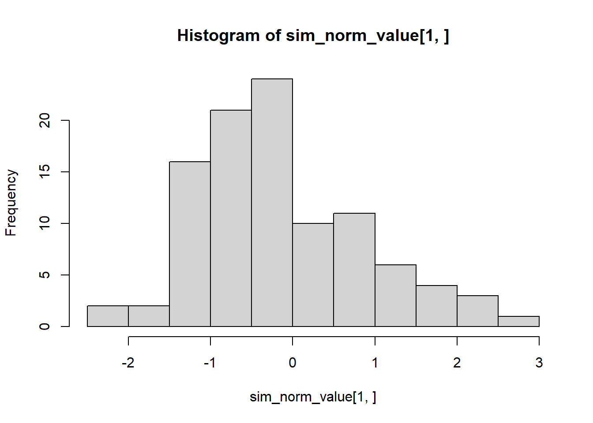
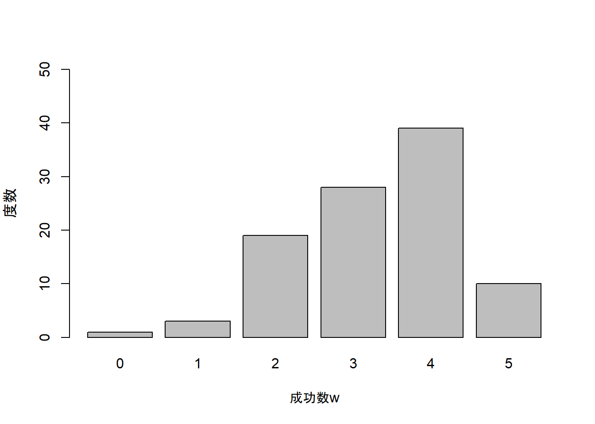

5.1.1 不偏推定量(p.128-129)
- (5.1)式は，標本分散\(s ^{2}\)の期待値\(E(s ^{2})\)が，母集団分散\(\sigma ^{2}\)よりもわずかに小さくなることを意味しています。
\[ E(s ^{2}) = \frac{N - 1}{N} \sigma ^{2} \tag{5.1}\\ \]
- (5.1)式は母集団分布の種類によらないことをシミュレーションで確認してみましょう。
母集団が(標準)正規分布の場合
- 正規分布は平均\(\mu\)と分散\(\sigma ^{2}\)で特徴づけられる分布です。特に，平均\(\mu = 0\)，分散\(\sigma ^{2} = 1\)の時の正規分布を標準正規分布と呼びます。
- 正規分布の詳しい説明は4章を参考にしてください。
- 正規分布の詳しい説明は4章を参考にしてください。
- シミュレーションの手順
- 正規分布に従う乱数を発生させる
rnorm()関数を使って，標準正規分布に従う乱数を生成し，sim_norm_valueというオブジェクトに代入する。
rnorm()関数は，rnorm(生成したい乱数の数, mean = 母集団の平均の値, sd = 母集団の標準偏差の値)という引数を指定します。今回は標準正規分布に従う乱数を100個生成するので，rnorm(100, mean = 1, sd = 0)というコードになります。
sim_norm_valueの分散を計算し，sim_norm_varというオブジェクトに代入する。- 上記の手順をfor文を使い1000回繰り返す。
- 1000個の
sim_norm_varの期待値を計算する。
- 標準正規分布に従う100個の乱数を生成し，分散を求める作業を1000回繰り返します。
set.seed(1234)
sim_norm_value <- matrix(NA, nrow = 1000, ncol = 100)
sim_norm_var <- NA
for(i in 1:1000){
sim_norm_value[i,] <- rnorm(100, mean = 0, sd = 1)
sim_norm_var[i] <- mean((sim_norm_value[i,] - mean(sim_norm_value[i,]))^2)
}- 1000回繰り返したうちの1回目の乱数をヒストグラムで確認します。

平均が0付近になっていることが確認できます。
コンソールに
sim_norm_varと入力すると，計算された分散が1000個表示されます。
sim_norm_varの期待値を計算します。
## [1] 0.988825- 乱数を生成する際に，母集団の分散は1としました。教科書の記述通り標本分散の期待値は母集団分散よりもわずかに小さくなりことが確認できます。
- (5.1)式の関係が成り立っているか確認しましょう。今回のサンプルサイズ\(N\)は100です。
\[ E(s ^{2}) = \frac{N - 1}{N} \sigma ^{2} \tag{5.1}\\ \]
## [1] 0.99- ほぼ一致する値となりました。
母集団が2項分布の場合
2項分布は「成功確率\(\pi\)の試行を独立に\(N\)回繰り返したときの成功数\(w\)の確率を与える分布」(教科書p96)でした。
シミュレーションの手順
- 2項分布に従う乱数を発生させる
rbinom()関数を使って2項分布に従う乱数を生成し，sim_binom_valueというオブジェクトに代入する。
rbinom()関数は，rnorm(生成したい乱数の数, size = 試行数, prob = 成功確率)という引数を指定します。今回は試行数\(N = 5\)，成功確率\(\pi = .6\)の2項分布に従う乱数を100個生成します。よって，rbinom(100, size = 5, prob = 0.6)というコードになります。
sim_binom_valueの分散を計算し，sim_binom_varというオブジェクトに代入する。
(以下同様の手順を繰り返す)
- 試行数\(N = 5\)，成功確率\(\pi = .6\)の2項分布に従う100個の乱数を生成し，分散を求める作業を1000回繰り返します。
set.seed(1234)
sim_binom_value <- matrix(NA, nrow = 1000, ncol = 100)
sim_binom_var <- NA
for(i in 1:1000){
sim_binom_value[i,] <- rbinom(100, size = 5, prob = 0.6)
sim_binom_var[i] <- mean((sim_norm_value[i,] - mean(sim_norm_value[i,]))^2)
}- 1000回繰り返したうちの1回目の乱数を棒グラフで確認します(軸に日本語を使っているので，Macの人は文字化けする可能性があります。3章3.1.1や4章4.1.1で対処法を載せているので確認してください)。

- 試行数\(N = 5\)，成功確率\(\pi = .6\)の2項分布に従うので，成功数\(w\)は0から5までを取ります。
- 成功確率\(\pi\)が0,6なので，成功数\(w\)は3が最も多く出現するはずですが，シミュレーションなので今回は4が最も多く出現しています。
sim_binom_value[1,]をsim_binom_value[2,]やsim_binom_value[3,]などに変更して他の乱数の棒グラフを確認してみてください。- ここの数字は1000回繰り返した乱数の順番を表しています。
- ここの数字は1000回繰り返した乱数の順番を表しています。
- 2項分布の母集団分散\(\sigma ^{2} _{w}\)は教科書p.99の(4.8)式に従って計算することができます。(4.8)式は標準偏差を表しているので，ルートをとることで分散になります。
\[ \sigma ^{2} = N \pi(1 - \pi) \]
- よって，試行数\(N = 5\)，成功確率\(\pi = .6\)に従う2項分布の分散は以下の値になります。
## [1] 1.2sim_binom_varの期待値を計算します。
## [1] 0.988825- 母集団分散\(\sigma ^{2} _{w}\)よりも標本分散の期待値が小さくなっていることがわかります。
- (5.1)式の関係が成り立っているか確認しましょう。
## [1] 0.96ほぼ一致する値となりました。
以上から，母集団分布の種類によらず(5.1)式の関係が成り立っていることが確認できました。